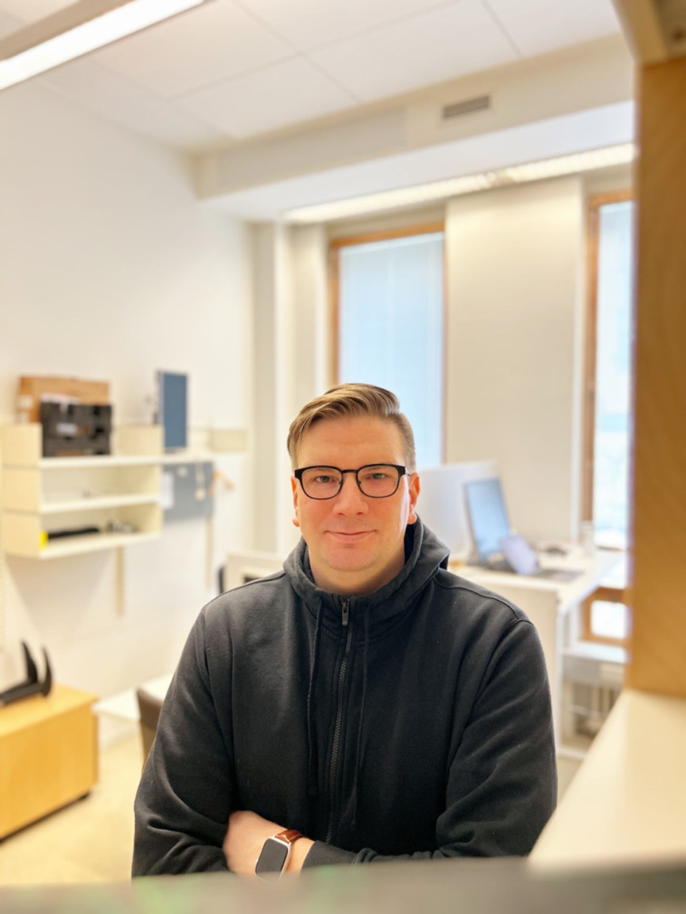

Language Technology Researcher

I am a computational linguist and a language technology researcher with expertise in language understanding, reasoning, and large language models (LLM). Currently, I serve as the Head of Research and Development at SiloGen, where I leverage my 20 years of experience in research, software engineering, consulting, and leadership to drive technological advancements. In addition to my role at SiloGen, I hold the position of Visiting Scholar in Language Technology at the University of Helsinki.My research primarily centres around natural language understanding, reasoning, and natural language inference, employing machine learning techniques to address these challenges. I am particularly fascinated by the intricacies of language comprehension, the development of AI models to represent it, and the methodologies for evaluating these models.
Throughout my career, I have made significant contributions to the field of natural language processing and language technology. Notably, I have developed production-grade machine learning models that have had a substantial impact, being employed by millions of end users in diverse applications such as machine translation, speech recognition, and natural language understanding. These real-world applications have allowed me to bridge the gap between research and practical, scalable solutions.
My educational background includes an MSc in Computational Linguistics and Formal Grammar from King's College London, which I completed in 2007, and a BSc in Philosophy from the London School of Economics, obtained in 2005. I am currently in the process of completing my Ph.D., with my dissertation defence scheduled for 19th January 2024.